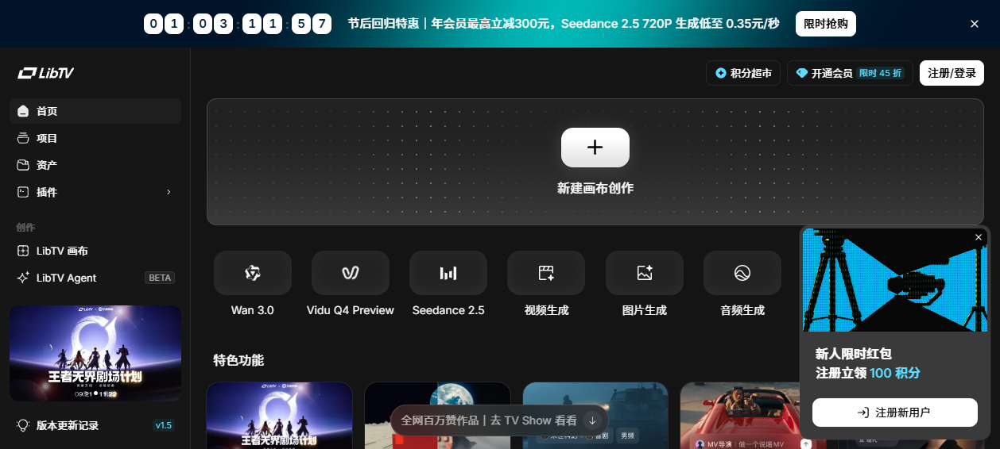
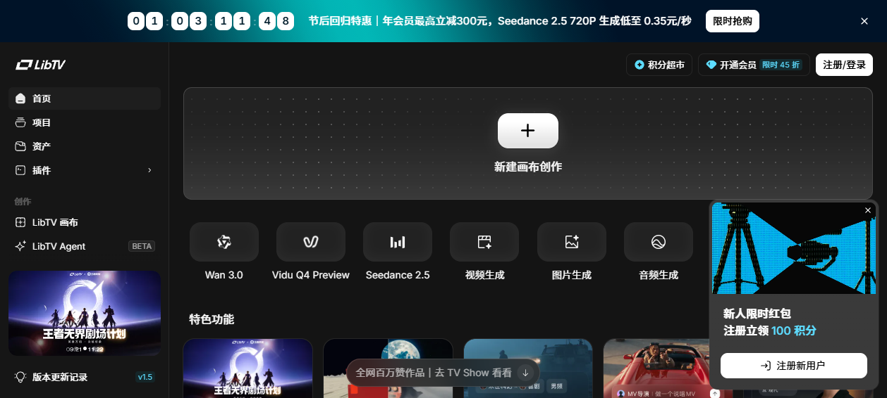

LibTV 网页版 · 功能逆向报告
目标：https://www.liblib.tv/（Liblib 旗下 LibTV） ·
逆向日期：2026-10-12 ·
方法：真实浏览器实测 + 前端 JS 包静态挖掘 + 官方版本 API + 官方 Agent Skill 仓库 ·
用途：供「拾光剪影」对标参考
一句话结论：LibTV 是一个 Next.js 单页应用，用「无限画布 + 节点工作流」把「剧本 → 分镜 → 资产 → 视频 → 剪辑」串成一条链；
它最大的结构性特征是双入口——一扇给人类创作者（画布 UI，需登录），一扇给 AI Agent（im.liblib.tv OpenAPI，无需打开网页）。
全部核心交互（画布 / Agent / 五大特色功能）都在登录墙之后；未登录只能看到产品外壳与功能清单。
一、逆向方法与证据链
| 手段 | 做法 | 拿到的证据 |
|---|
| 浏览器实测 | agent-browser 0.34.0 真实 Chromium 打开站点，抓可访问性树、截图、网络请求 | 页面结构、导航、屏幕截图、network requests 全量 266 条 |
| JS 包挖掘 | 下载 89 个前端 chunk（--compressed 解压，9.0 MB），正则抽取中文功能串与路由 | 节点类型、菜单项、提示文案（登录墙背后的功能词汇全在这里） |
| 官方接口 | POST api.liblib.tv/api/feature-news/version/list | 官方 v1.0 / v1.5 功能清单原文（权威） |
| 官方仓库 | github.com/libtv-labs/libtv-skills（MIT） | Agent 入口的 OpenAPI 协议、鉴权、脚本 |

实测截图 · 首页（未登录）

实测截图 · 3D-BOX 落地页
二、产品外壳（实测页面结构）
未登录即可完整看到左侧导航与首页入口，说明这是一个「先给船票、后验身份」的 SPA 外壳。
| 区域 | 内容 |
|---|
| 主导航 | 首页 / 项目 / 资产 / 插件（可展开） |
| 创作 核心 | LibTV 画布 · LibTV Agent BETA |
| 社区 | 学院（大师开讲）/ TV Show（全网爆款）/ 创作者挑战赛（王者大赛） |
| 首页入口 | 新建画布创作 ｜ 快捷模型 Wan 3.0 Vidu Q4 Preview Seedance 2.5 ｜ 视频生成 / 图片生成 / 音频生成 / 剧本生成 / 智能剪辑 |
| 特色功能 | 王者荣耀联名活动 · 3D-BOX · 剧本原创与改编 · 导演执导 · 角色造型室（+ 创意片头） |
| TV Show 分区 | 全部 / AI短片黑客松 / 全网爆款 / 王者无界剧场 / 精选画布 / 专业影视 / 短剧漫剧 / 商业广告 / 动漫游戏 / 教育生活 / TV工具箱 |
| 商业化 | 积分超市 · 开通会员（限时 45 折）· 团队席位 · 连续包月/季/年 · 积分卡（通用 / 专属模型卡） |
三、官方功能清单（权威，来自官方版本 API）
v1.5（2026-09-20）· 五大独家功能
| 功能 | 官方描述（原文摘要） |
|---|
| 剧本原创与改编 | 从一个想法到原创剧本，局部打磨，也照顾前后的故事；按题材、人设与背景辅助创作，对台词、冲突等局部改写、对比确认；关联修改会提示对大纲、钩子与伏笔的影响，由用户决定是否同步调整。 |
| 导演执导 | 可调用的导演能力，拆分镜、写提示词、批量推进；可选预设导演或导入自己的创作方法与提示词模板生成「导演分身」；手动模式下先审核计划、确认后再生成。 |
| 角色造型室 | 从人设 / 参考图 / 已有角色出发，可视化调整五官、发型、服装，细化痣、雀斑、疤痕等特征；可关联音色、保存角色卡，跨项目复用。 |
| 创意片头 | 基于选中画面设计片名、生成文字动效，提供字幕识别与样式调整；口播视频支持自动粗剪、画中画、B-Roll 匹配与音效配乐。 |
| 3D-BOX | 不会建模也能开机；文字/参考图描述需求，Agent 帮搭场景、安排角色动作与机位，完成多分镜预演；手绘轨迹即可预演运镜，支持对话或手动调整场景与镜头。 |
v1.5 其他优化（官方原文）：【TV Director】支持新建、更新、运行画布节点；支持 Agent 运行中切换自动/手动模式；画布打开速度显著提升；优化数千节点卡顿；修复画布偶发丢节点。
v1.0（2026-09-11）· 十项能力（多数标注「独家」）
| 能力 | 要点 |
|---|
| 深度动作捕捉 | 一键提取视频深度信息，让动作/运镜参考不受原风格干扰 |
| 逐帧拉片 | 从叙事分镜 / 精彩运镜 / 动作片段 / 音频参考多维度分析视频，输出素材供 Seedance 使用 |
| 智能引用 AutoLink | 输入提示词后实时把相关参考素材@引用到提示词后，配合多参模型 |
| 片段重拍 | 毫秒级时间戳定位，时间轴上选一段或多段重拍，用文字描述改动 |
| 视频智能续写 | 从任意时间点续写，可加新参考图/视频 |
| 智能剪辑 | 口播视频 / 批量广告 / 智能混剪 / 无人出镜解说；自动匹配动效、卡点、布局，一键剪辑；素材粗剪（去口水词、停顿、重复） |
| 图层分离 | 把图片中人物/物体/文字/背景拆成可独立编辑图层，支持移动、缩放、旋转、层级、景深 |
| 宫格切分 | 可拖动分割线自定义位置 |
| Seedance 2.5 长片直出 | 一键直出 5 分钟成片，支持查看过程片段与画布精修 |
| Blender 插件 | 在 Blender 录制 3D 白模视频/截图，一键发送到 LibTV（liblib.tv/blender） |
四、画布能力全景（从前端 JS 包挖掘，越过登录墙）
以下词汇均从打包后的前端代码中抽取，代表画布内部实际存在的节点/面板/操作。
剧本域
- 剧本创编 / 剧本浓缩 / 剧本结构 / 剧本设定器
- 文本生剧本 · 视频生剧本 · 角色生剧本
- 上传剧本 / 剧本文本快照 / 选择剧本模型
- 微电影剧本创作 · 原创剧本 · 分集剧本
分镜域
- 智能分镜 / 生成分镜 / 分镜生成器
- 分镜组（创建/删除/合并/复制/转组）
- 分镜单元格 · 分镜总时长 · 分镜提示词
- 分镜叙事
导演域
- 3D 导演台 / 导演控制台 / 导演台节点
- 导演视角 · 导演风格 · 导演角色
- 导演级提示词 · 插入当前导演台
- 选择/自定义导演角色
造型域
- 角色造型室 · 人设定制造型
- 上传造型参考图 · 造型技能
- 「创建、管理并复用角色的造型、状态与音色」
3D 域
- 3D-BOX（我的/创建/保存/分享/删除）
- 3D 场景 / 3D 视图 / 3D 资产 / 3D 动画
- Agent 搭景 · 角色动作 · 机位调度
资产域
- 角色库 / 角色组 · 场景库 · 道具
- 风格库 / 风格广场 · 素材库
- 一致性资产 · 资产图锚定
机位域
- 多机位九宫格 · 机位轨 · 机位关键帧
- 切换/定位/进入/退出机位
- 空间与机位 · 选择机位视角
视频域
- 首帧 / 尾帧 / 首尾帧生视频
- 智能续写 · 片段重拍 · 深度动作捕捉
- 逐帧拉片 · 视频故事 · 运镜轨迹
图像域
- 九宫格 / 情绪九宫格 / 多机位九宫格 4K
- 高清放大（宫格放大）· 智能抠像
- 图层分离 · 宫格切分 · 裁剪
剪辑域
- 智能剪辑 · 口播粗剪 · B-Roll 匹配
- 轨道（视频/音频/字幕/文本/运镜）
- 字幕（含智能去字幕、框选去字幕）
- 转场库 / 特效库 · 时间线
引用与工作流
- 智能引用 AutoLink（@引用节点/素材）
- 「@ 引用工作流 / 节点 / 资源」
- 脚本工作流规划 · 成片工作流
Agent 与技能
- 掌握技能点 · 造型技能 · 不使用技能
- 分享「agent 对话 + agent 一致性资产」
- 「让 {brand} 进入你的 Agent 工作流」
五、技术架构（实测网络请求）
| 层 | 实测结论 |
|---|
| 前端框架 | Next.js + Turbopack（chunk 头 globalThis.TURBOPACK），静态资源托管在 liblibai-web-static.liblib.cloud/liblibtv_online/ |
| LibTV 专属 API | https://api.liblib.tv/api/*（feature-news、community、canvas project、task） |
| Liblib 平台 API | https://api2.liblib.art/api/www/*（登录、模型、会员、积分、优惠券、活动） |
| Agent OpenAPI | https://im.liblib.tv/openapi/*（会话式生成，见第七节） |
| 生成网关 | /gateway/sd-api/generate/image · /generate/video/history · /generate/progress/msg/v3 · /segment-anything-api/inference（SAM 分割） |
| 第三方 | 百度 fclog（投放归因）、阿里云 SLS RUM（前端性能）、七鱼 qiyukf（客服）、howxm（风控/防刷）、iconify |
关键业务 API（从 JS 抽取）
登录 POST /api/www/login/sendLoginPhoneCode | loginByPhoneCode
画布/项目 /api/canvas/project/detail | /template/list | /template/republish | /share/detail
任务/产物 /api/task/artifact/list | /api/task/artifact/delete
/api/task/generation/detail | /api/canvas/task/generation/detail
生成网关 /gateway/sd-api/generate/image | video/history | editor/list | progress/msg/v3
模型 /api/www/model/search | /model/getMyModel/ | /model/listByTeam
/api/www/video/recommend-models
技能 /skill/create
ComfyUI /comfy/like/list
商业化 /api/www/power/v2/{recharge,deduct}log | /api/www/priority/...
/api/www/member/packages | /member/powers | /api/www/coupon/query/available
六、登录墙与逆向边界
实测：点「LibTV 画布」「3D-BOX」等均弹出登录框（微信一键登录 / 手机号登录 / 团队邮箱登录 / QQ 扫码登录）。
因此画布内部 UI、Agent 面板、特色功能的实际操作流程无法在未登录下直接观测——本报告第四节的能力来自前端代码静态挖掘，属「代码级真实存在」，但未逐一在 UI 上验证交互细节。
| 未登录可见 | 需登录 |
|---|
首页与完整左侧导航 · 特色功能入口 · TV Show 展示与分区 · 3D-BOX 落地页（/3d-box）· Blender 插件页（/blender）· 版本更新记录 | 画布编辑 · Agent 对话 · 项目 / 资产 / 插件 · 各特色功能实操 · 生成与下载 |
七、双入口模型（LibTV 最值得注意的结构）
门 1 · 人类创作者
- 载体：无限画布 + 节点图
- 入口：
www.liblib.tv/canvas（需登录）
- 特点：画布、节点、分镜、编辑等全部精细控制
门 2 · AI Agent 开放 API
- 载体：会话式 OpenAPI，不经过网页
- 入口：
https://im.liblib.tv/openapi/*
- 规范：OpenClaw Skill（`npx skills add libtv-labs/libtv-skills`）
- 鉴权：
Authorization: Bearer <LIBTV_ACCESS_KEY>
POST /openapi/session 创建会话 / 发送生成指令 → {projectUuid, sessionId}
GET /openapi/session/:id 查询会话消息（afterSeq 增量轮询）
POST /openapi/session/change-project 切换绑定项目
POST /openapi/file/upload 上传图片/视频到 OSS（仅 image/* 与 video/*）
Agent 工作流：用户指令 → create_session → 轮询 query_session → download_results → 展示结果 + 画布链接
战略含义：LibTV 把「生成能力」抽成一个面向 Agent 的会话 API，让外部 Agent（OpenClaw 等）无需 UI 就能驱动它出片；
这与「拾光剪影」在 docs/_reports/2026-09-26-LibTV1.5对标升级方案.md 中的判断一致——
对标它的产品形态，不搬它的「云端 Agent 全包、用户只传话」哲学。
八、对「拾光剪影」的可借鉴点
| LibTV 做法 | 拾光剪影现状 | 建议 |
|---|
| 画布节点 + 无限画布承载全链路 | 画布（React Flow）已具备，节点体系在演进 | 已对齐 |
| 「@引用」把素材/节点挂到提示词（AutoLink） | 已有「连线上游素材引用」（对标 AI Canvas 0.9.21） | 已对齐 |
| 导演分身 / 导演执导（可调用、可导入模板） | 能力目录含「导演分身·可调用能力」，但结果未落时间线 | 补最后一公里 |
| 角色造型室：可视化捏脸 + 关联音色 + 角色卡复用 | 角色库 20 字段很全，但存不了形象图（只有文字） | 缺口 |
| 剧本原创与改编：局部改写 + 影响面提示（大纲/钩子/伏笔） | 剧本节点是纯文本框，无生产端 | 缺口 |
| 3D-BOX：Agent 搭景 + 手绘轨迹预演运镜 | 已有 3D 导演台 / Stage3D / 白模视频；缺与角色库、时间线接口 | 补接口 |
| Agent OpenAPI（会话式生成，供外部 Agent 调用） | MCP 客户端 + canvas bridge 已通，但无对外「会话式生成 API」 | 可考虑 |
| 智能剪辑：去口水词/停顿/重复的素材粗剪 | 精剪管线强，缺「一键粗剪写 _clips」入口（已被列入待办） | 在办 |
九、结论
- LibTV = 无限画布 + 节点工作流 + 双入口（人类 UI / Agent API），底座是 Next.js，生成走自建 gateway。
- 它的护城河是「一条链走完」与「云端 Agent 全包」；护城河之外是登录墙 + 积分/会员商业化。
- 拾光剪影在多个点已对齐甚至更深（角色 20 字段、转场语义分层、冻结区工程纪律）；真正缺的是
资产本体（形象图）、剧本生产端、导演结果落时间线三处「最后一公里」。
- 本次逆向的完整原始证据（截图 / 网络请求 / JS 抽取 / 官方接口原始 JSON）保存在
.workbuddy/tmp/libtv/，可复核。